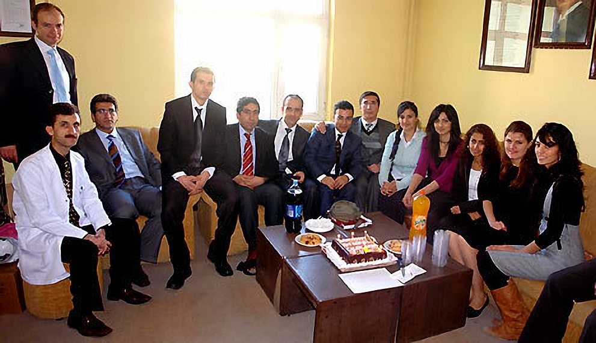
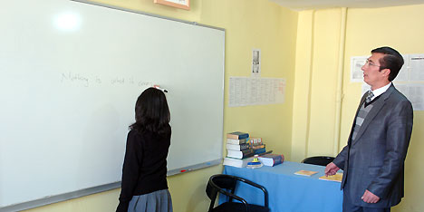
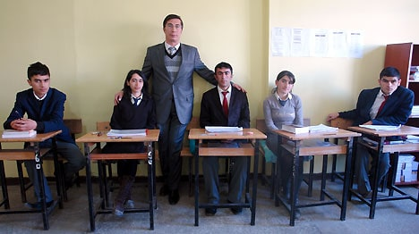

24 Kasım 2008 - Hakkari Haber TV
Orhan Yıldız, Yüksekova'ya tam 12 yıl önce gönüllü olarak geldi ve bu 12 yıl içinde buradaki insanlara sayısız hizmetler verdi. Yıldız ile söyleşi yaptık:
Bu gün öğretmenler günü. Bu günün anlamı sözcüklerle tarif edilemez. Dünyada her şeye kıymet biçilebilir. Ama öğretmenin eserine kıymet biçilemez. İşte eğitim aşkıyla yanan bir öğretmenin Yüksekova'da başarılarla geçen 12 yılı.
Orhan Yıldız, Yüksekova'ya tam 12 yıl önce gönüllü olarak geldi ve bu 12 yıl içinde buradaki insanlara sayısız hizmetler verdi, öğrencileriyle sayısız başarılara imza attı.
Siyasetten, ırkçılıktan ve irticadan uzak sadece kendisini eğitime adayan bir eğitimci olmayı başardı. Bu uzun zaman dilimi içinde kendisini herkese sevdirmeyi başaran Orhan Yıldız'ın eğitime ve Yüksekova'daki öğrencilere verdiği desteği ve içindeki insan sevgisini kimse inkar edemez.
YÜksekova Haber'den Tekin Yıldız, 24 Kasım Öğretmenler Günü Vesilesiyle Yıldız ile okuyucularımız için bir söyleşi düzenledi. İşte o söyleşi:
- Hocam kendinizi bize tanıtır mısınız?
02.01.1972 yılında Aksaray'da doğdum. İlköğretimi Aksaray'da ortaöğretimi Kayseri'de Liseyi Sivas'ta, üniversiteyi Erzurum'da tamamladıktan sonra ilk görev yerim olan Edirne Uzunköprü İlçesinde yaptım. Burada 2 yıl kaldıktan sonra gönüllü/istekli olarak Hakkari, Şırnak, Tunceli gibi şehirlerin tercihini yaptım. 1997 eğitim-öğretim yılından beri Hakkari'nin Yüksekova ilçesinde Anadolu Lisesinde görev yapmaktayım.
- Neden doğu illerine 'gönüllü' olarak gelmek istediniz?
Öğrenim hayatımı devletimin yani milletimin vergileriyle ve desteğiyle tamamladım. Bu uzun ve zorlu süreçte his olarak devlet, millet ve üstün güç kavramı beni ayakta tuttu. Oluşturduğum kişiliğim ve elde ettiğim benlik tasarımı gereği 'nankör, vefasız ve çıkarcı' olmamam gerekiyordu. Yani vefa duygusu gereği milletime devletime ve insanıma borcumu ödemek durumundaydım. Ayrıca dünya görüşüm şekillenirken haliyle dünyaya ve ülkeme duyarlı bir birey olmam kaçınılmazdı. Bünyemdeki bazı insani değerlerin eksikliğini çok okumakla ülkenin sorunlarına duyarlılık kazanmakla doldurdum. Şunu demek istiyorum hizmet etmek birtakım şeylere ilgili olmak insanımızı sevmek, çalışmak gerektiğini düşündüm. Sloganlardan, içi boş köhne cümlelerden iğrendim. Samimi bir öğretmen olarak ülkenin sorunlarını ve sosyal gerekçeleriyle barışık bir halde ve asla ön yargı taşımadan, ruhumu korkuya teslim etmeden bu yörelere gitmek gerektiğine inanıyordum. Aynaya baktığımda gözlerimi kendimden kaçırıyordum. Çünkü Sivas'tan bu tarafa benim öz vatanım, buralarda yaşayanlar benim insanım. Sağlıklı ve isabetli bir karar vermiş olmaktan dolayı kendimi gerçekleştiriyor olmanın iç huzurunu yaşıyorum. Ülkesini ve insanını içtenlikle seven gayri insani önyargılar taşımayan herkesi de başta öğretmenler olmak üzere buralara hiç çekinmeden gelmeyi ve mümkünse uzun yıllar kalmaya davet ediyorum.
- 12 yıldır burada öğretmenlik yapıyorsunuz. Bu 12 yıl sizin için nasıl geçti?
İnsanlarla iyi ve yapıcı iletişim içinde olarak iyi niyetle, anlayış saygı ve hoşgörüyle güzel dostluklar edindim. Çok sayıda öğrencimin müstakbel İngilizce Öğretmeni olarak üniversiteyi kazanmalarına vesile oldum. Sıkıntı ve zorluk açısından özellikle belirteceğim bir durum veya olay yok. Yörenin avantaj ve dezavantajlarını yine kendi insanımla birlikte yaşadım, paylaştım. Halkımızın sevgi, misafirperverliği, içtenliği ve saygısı bana çok yardımcı oldu. Onların sonsuz desteğini gördüm. Bu sayede kendimde daha fazla güç gördüm. İnsanımızın anlaşılma ve doğru yorumlama isteğine tanık oldum. Çoklukla sanırım birbirimizi isabetli anladık ve oluşan bu güven ve destek sayesinde nasipse burada emekli olmayı düşünüyorum.
- Buraya ilk tayininiz açıklandığında neler hissettiniz?
Tereddütsizce ifade etmeliyim ki mutlu oldum. Rahattım çünkü önyargılarım yoktu. Öncelikli hizmete ihtiyaç duyan bir bölgeye zaten gönüllü tayin istemiştim ve arzumun gerçek olması beni sevindirdi. Kendi içimde devleştim.
Çevreden olumsuz, yıkıcı, tahrip edici ve önyargı dolu yorumlar telkinler yapılıyordu. Hiç birini kale almadım tabii ki ve cevap olarak da 'birileri de Sivas'tan öte gitmeli' dedim. Özellikle karayoluyla yaptığım yolculuk 36 saat sürdü.
- Bu 12 yıl zarfında çok başarılı bir öğretmen oldunuz ve önemli başarılara imza attınız. Bunu neye borçlusunuz?
Bir öğretmeni temel olarak 3 alanda ele almak mümkün. Birincisi branş bilgisi, ikincisi genel gültür ve üçüncüsü ise pedagoloji ve formasyon.
Ben kendi branşımda sürekli araştırmayı, yenilenmeyi ve kendimi aşmayı bir ilke olarak edindim. Genel kültür olarak ise durumum nedir bilemiyorum. Belki 'Kim 500 milyar ister'e katılmam gerek. En önemlisi de padagojik formasyondur bir öğretmen için. Diploma maaş hakkı veriyor ama üretken verimli ve başarılı bir öğretmen olmak zamana bağlı. Bu saydıklarım bireysel yönden geçerli birde asıl malzememiz olan öğrencilerimizin potansiyelini iyi ve akılcı bir şekilde işlemek, onlara güven duygusu kazandırmak, onlara yapabileceklerine inandırmak varsa aşağılık kompleksini ortadan kaldırmak başarıyı getiriyor zaten.
Öğretmen bir antrenördür, danışmandır, rehberdir. Asıl olan iyi yönlendirilen öğrencidir. Eğitim öğretim sürecinde diğer bütün şartlar tamam olmak kaydıyla başarı %99 öğrenciye, onun şevkine, hevesine, kararlılığında, sabrına ve yoğun tempoya tahammül gücüne bağlıdır.
Böylelikle beni doğru anlayan ve gereğini yaparak başarılı sonuçlara iöza atan okul idaresine: Müdürüm Enver YAŞAR'a yıllarca müdür yardımcılığımızı yapan ve her türlü kahrımızı çekem Cumali KAYA'ya, mesai arkadaşlarıma içtenlikle teşekkür ediyorum. Eğitim özü itibariyle bir ekip ve takım çalışmasıdır. İsabetli şartların uygun zaman ve zeminde buluşması alkışlanacak sonuçlar doğuruyor.
- Yüksekova'da saygı duyulan ve sevilen bir insansınız, bunu nasıl sağladınız?
Beşeri iletişimlerin temel ilkelerine riayet etmek ve 'samimi olmak' yeterliydi. Açıkça belirtmeliyim ki Yüksekova'da çok insanla farklı dünya görüşlerine sahibiz. Ancak mertlik, dürüstlük, saygı, önyargısız olmak, yargılanmaktan çok anlamaya çalışmak ve sevgiyle, tebessümle yaklaşmak zaten beraberinde kaliteli düzeyli be saygılı iletişleri de getiriyor. İnsanımız son derece içten, misafirperver, ilgili ve güler yüzlü benle. Zengin fakir fark etmez. Hepsi lokmasını paylaşmaya, evinde ağırlamaya ve her türlü desteği vermeye hazırdı.
Herkes kendi işini yaparsa, insanlara saygı duyarsanız, onları doğrı yorumlarsanız ve onları verilmiş diğer kazanılmış değer ve erdemlerine göre algılarsanız hiçbir sorun çıkmıyor.
- Burada unutamadığınız bir anınız varsa bizimle paylaşır mısınız?
Sayısız diyebilirim. Ama beni en çok duygulandıran insan sevgisiye misafirperverliğiyle ve paylaşımla ilgili olanlarıdır. 'Dost aile' olarak tanımladığım bir ailem var yakın bir köyde. Davet edilişindeki ilgi, saygı ve izzeti ikram beni utandırmış ve mahcup etmiştir. Yokluk ve çaresizlik içinde insanların gösterdiği bu sevgi seli altında daha fazla ezilmemek için artık gidip gelmeyi bıraktım türlü mazeretler uydurarak. Gönül arzu eder ki sloganlar beylik cümleler kalıplaşmış ve köhne bakış açıları, önyargılar atılsın bir kenara ve insanımız kendi haline bırakılsın size o zaman görün 'kardeşliği, dostluğu'. Bu görev medyamıza düşüyor büyük oranda. Bireysel iletişimler ebedi kalıyor ancak bazen önyargılı reyting kaygılarının altında gölgede kalıyor.
- Israrla burada kalmak istiorsunuz. Hiç tayin arzunuz olmadı mı?
Burada kendimi gerçekleştirdiğimi düşündüğüm için rahatım, huzurum yerinde. Bir defa tayin düşündüm olmadı. Öylesine bir denemeydi. Bir defa da özel bir gerekçeyle düşündüm ama yine burada kalmayı tercih ettim. Burada beni soğutan korkutan ve bana itici gelen bir durum yok özellikle belirteceğim. Medyadaki önyargıları burada insanımın sıcaklığını ve eğitime verdiği önemi gördükçe halkımızın barışı huzuru kardeşliği ve anlaşmayı bu kadar önemsediğini görünce 'işte benim yerim burası' diyorum. Sanırım burada emekli olacağım. Ya da mezarda emeklilik. Memurun hali belli.
- Öğretmenler günü vesilesiyle meslektaşlarınıza ve öğrencilere neler söylemek istersiniz?
Eğitim sürecinde yer alan herkesin emeğine saygı duyduğumu belirterek öğretmen arkadaşlarımız gününü kutluyorum. Burada olmanın bir sıra dışılık arz etmediğini bilmelerini, öğrencilerin samimiyetle sevmelerini, mesleklerine bağlı olmalarını, velilere karşı ilgili olmalarını dilerim. Özellikle kendilerini kanıtlayacakları alan olan ders saatlerine gereken önemi vermelerini, samimi olmalarını, okul içinde siyasetten kaçınmalarını, Milli Eğitim Temel Kanunu çerçevesinde görev yaplaraını ısrarla tavsiye ederim ve lütfen önyargısız, ılımlı, uzlaşımcı, esnek ve güleryüzlü olsunlar.
Kaynak: Hakkari Haber TV